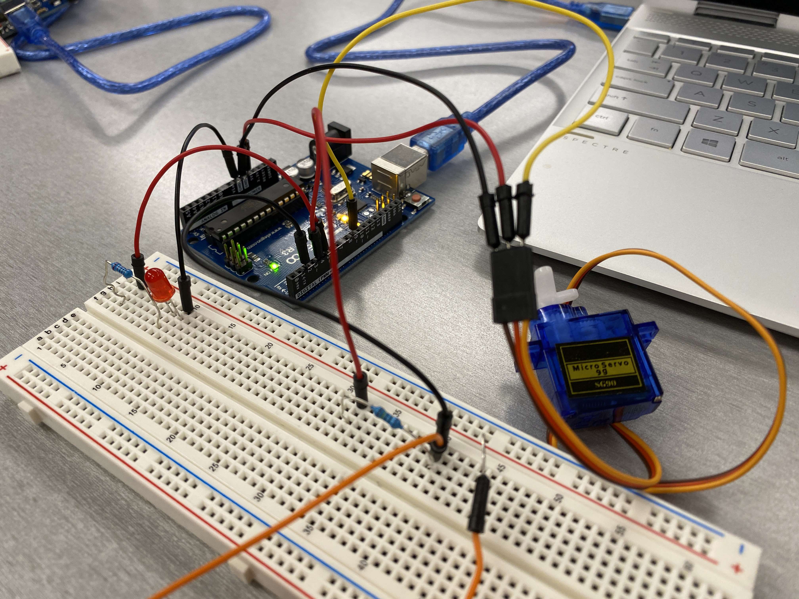
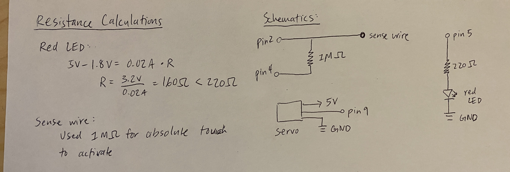

Yuming's Assignment 4!
This is the circuit that I built with a red LED, a capacitor, and a servo motor.
These are my calculations and schematics. I picked a 220 ohm resistor for the red LED because it was the lowest resistor that I had above 160 ohms and I used a 1 Mohm resistor for the the sense wire so that it could be activated by absolute touch.

This gif shows that the red LED lights up during the calibration period and after it is done calibrating, capacitive touch through the wire can be used to control the servo motor. The harder I press on the wire, the more the servo turns.
Here is my Arduino code:
#include // import capacitive sensor library
#include // import servo library
CapacitiveSensor cs_4_2 = CapacitiveSensor(4,2); // 1 megohm resistor between pins 4 & 2, pin 2 is sensor pin, add wire, metal thing
Servo myservo; // create servo object to control a servo
const int ledPin = 5; // pin that the red LED is attached to
long sensorValue; // the sensor value
int sensorMin = 1023; // minimum sensor value
int sensorMax = 0; // maximum sensor value
void setup() {
cs_4_2.set_CS_AutocaL_Millis(0xFFFFFFFF); // turn off autocalibrate on channel 1 - just as an example
Serial.begin(9600); // connect to serial monitor
myservo.attach(9); // attaches the servo on pin 9 to the servo object
// turn on red LED to signal the start of the calibration period:
pinMode(5, OUTPUT);
digitalWrite(ledPin, HIGH);
// calibrate during the first five seconds
while (millis() < 5000) {
sensorValue = cs_4_2.capacitiveSensor(30);
// record the maximum sensor value
if (sensorValue > sensorMax) {
sensorMax = sensorValue;
}
// record the minimum sensor value
if (sensorValue < sensorMin) {
sensorMin = sensorValue;
}
// print message to serial monitor that system is still callibrating
Serial.println("Still callibrating...");
}
// signal the end of the calibration period
digitalWrite(ledPin, LOW);
}
void loop()
{
long start = millis(); // record time at beginning of loop
// read the sensor:
sensorValue = cs_4_2.capacitiveSensor(30);
// in case the sensor value is outside the range seen during calibration
sensorValue = constrain(sensorValue, sensorMin, sensorMax);
// apply the calibration to the sensor reading
sensorValue = map(sensorValue, sensorMin, sensorMax, 0, 180);
myservo.write(sensorValue); // use value from capacitive touch to control servo
Serial.print(millis() - start); // check on performance in milliseconds
Serial.print("\t"); // tab character for debug window spacing
Serial.println(sensorValue); // print sensor output 1
delay(10); // arbitrary delay to limit data to serial port
}